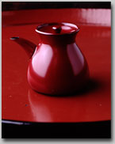

朱塗りの醤油さし
しっとりした朱塗りの漆の肌、小さくもきりっとけなげな口の形。この醤油さしは、見るなり惚れてしまった、わたしの数少ない衝動買いのひとつだ。溜塗りもあると、店主は言ったが、これ。この朱と形がこんなにぴったり愛らしく納まっているのだもの、溜塗りなんて考えられない。
底の口径も高さも六センチ。端正な姿は、素材が木ならではのフォルムでもあろうか。口のカーブ、胴のふっくらした膨らみ具合。焼きものだったら、こうはいかなかっただろう、と思わせるくらい、優しく塗りの魅力を発揮している。赤いボディの小ちゃな口の先には、内側の黒塗りがちらっと見えるのである。赤と黒のコントラストは心にくいばかりだ。
我が家では、使いやすさに定評あるクラフトものをずっと使用してきた。注ぎやすく裏漏りせず、機能的にはまったく申し分がないのである。買い替える必然性は無い筈なのに、なぜこの醤油差しに心が揺れてしまったのだろう。
クラフトものは、いつからかわからないが、食卓へ出すとき、なにがしかの抵抗感を覚えるようになったのである。こどもが小さく、毎日わさわさと過ごす時間の中では大して感じなかったことだ。感じなかったというか、そんなことを云々する余裕はなかった、というべきか。
たとえば、質感や手触りといったことが、近年やたらと気にかかるのである。
使っていた醤油差しもその一つなのであった。すぺっとした肌がもの足りない。シンプルで機能的ではあるが、それまで。語りかけてくるものがない。愛着が今一つなのである。
これは衝動買いを促すほどなのだ。語りかけてきたのである。醤油差しが、である。
作者の本間幸夫さんに聞いてみると、半年ほどかけて試作に試作を重ねた結果の作だという。醤油が程よい量ですーっとでてくるよう。あるいは蓋が滑りおちないよう。工夫を施し何度も試してみたそうだ。蓋の径は、比較的大きくできていて、瓶から醤油を移し替える際も、注ぎやすい。先に記いたように、内側は全体を黒で塗っている。ごく細い口の内側にも。ここを塗るために、特製の刷毛まで注文したのだそうだ。
口を付けた注ぐ用途のものは、片口でさえ制作に手間がかかる。醤油差しの場合は、蓋もぴしっとしないと用をなさない。形が決まるまで、さぞ苦労があったことだろう。
素地は、丈夫な欅を選んだという。かすかに木の素材感を漂わせた塗りが軽やかである。なんども言ってしまうが、形と質感が美しい調和を生み出している。文句なしに素敵だ。作った人の思いを、小さな器のたたずまいが、けなげに伝えている。
これを使いだしたら、いつもの醤油がおいしく感じるようになった。味さえグレードアップさせてしまう醤油差しなんて、あるだろうか。醤油の塩気がこびりつかないよう、私は醤油を入れ替える度に水洗いをしている。ある日、入れ替えのため水に漬けたままだったので、乾くまでの積もりで、以前使っていた醤油差しを出してきて、食卓にのせておいた。と、すかさず家族から声がかかったのである。
「漆のはどうしたの？ あっちがいいな」
質感や手触りは、私だけの問題ではなかった、と反省した次第である。同時に、ナリは小さくても漆のもつ魅力と実力にも、敬意を表したのであった。
